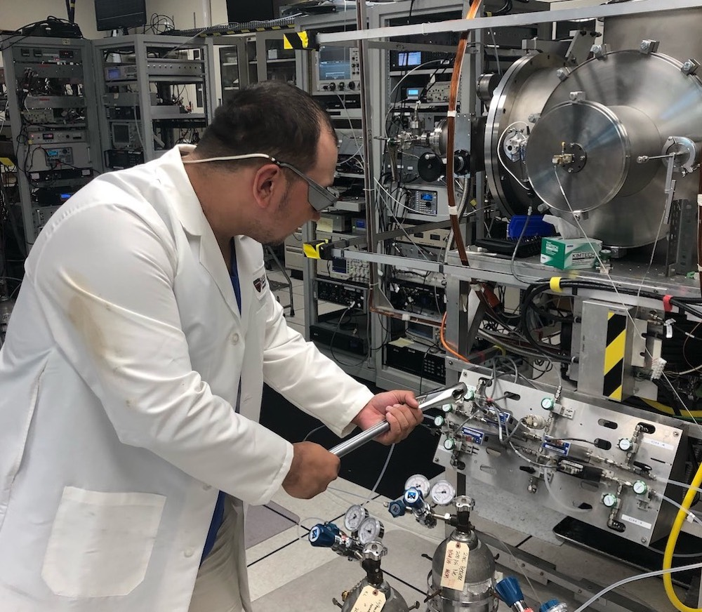

Postdoctoral Fellowships
Launch Your Career at the CfA
Postdoctoral Programs Overview
CfA’s rich and varied rich and varied astrophysics research programs are known globally for strength in observational and theoretical astrophysics, facilities design and development, leadership in NASA missions, and instrumentation for precision astronomy. More than 300 Ph.D. scientists conduct research, advise and mentor students and fellows, and serve the larger astrophysics community.
The CfA offers a variety of postdoctoral fellowships in focused research areas, for example:
- Submillimeter Array (SMA) Fellowships
- Institute for Theory and Computation (ITC) Fellowships
- Institute for Theoretical Atomic, Molecular, and Optical Physics (ITAMP) Fellowships.
- Black Hole Initiative
- Harvard Postdoctoral Fellowship for Future Faculty Leaders
 NASA and NSF Postdoctoral Fellows are also welcome at the CfA. NASA Fellowships may be brought to either of CfA's institutions, Smithsonian Astrophysical Observatory or Harvard College Observatory.
Individual scientists at the CfA may also be looking for postdoctoral fellows to work on contracts and grants.
The Center for Astrophysics | Harvard & Smithsonian offers two Postdoctoral Fellowships open to a broad range of astrophysics, as proposed by Fellowship applicants. These Fellowships include a generous stipend, mentoring, independent research & travel funds, and excellent benefits.
The CfA Fellowship
My CfA Fellowship was pivotal for met to gain independence as a young researcher. It enabled me to help start the High-Z SN Search team, the team which discovered that the expansion rate of the Universe was accelerating. These fellowships are amongst the most prestigious in the world, and are foundational to the culture of excellence at the Center for Astrophysics | Harvard & Smithsonian.
Brian Schmidt, 1993 CfA Postdoctoral Fellow, current Vice-Chancellor, Australian National University and 2011 Nobel Laureate
The CfA Postdoctoral Fellowship is intended for recent Ph.D. recipients. The Fellowship supports innovative astrophysics research by offering to the next generation of researchers full access to the unique facilities, research staff and resources of the CfA. Past CfA Postdoctoral Fellows have gone on to faculty and research positions at major universities and research centers, and have received some of astrophysics' most important awards.
The Clay Fellowship
The Clay Fellowship allowed me the opportunity to pursue both independent research and collaborative research with some of the world’s experts on star and planet formation. As a fellow at CfA, one is reminded daily that important chapters in the history of astronomy were written there, and it was an honor to work among the current generation of astronomers trying to write exciting new chapters in that history. It was an amazing experience and I only wish I could do it all over again!
Eric Mamajek, 2004 Clay Fellow, Deputy Program Scientist, Exoplanet Exploration Program, Jet Propulsion Laboratory, California Institute of Technology
As a Clay Fellow at the CfA, I was introduced to the world-class Magellan Telescopes. Not only did it enable to me to obtain ground-breaking results about ancient dwarf galaxies, I also fell in love with observing and the Atacama Desert in Chile. These days I'm fortunate to be able continue my research with Magellan and I love taking undergrads to the telescopes and teach them what it means to collect astronomical data.
Anna Frebel, 2008 Clay Fellow, Associate Professor of Physics, Massachusetts Institute of Technology
 The Clay Postdoctoral Fellowship is designed for independent researchers to pursue research programs of their own conception and design. Like the CfA Fellows, Clay Fellows have full access to the unique resources of the CfA. Philanthropist Landon Clay and his wife, Lavinia, established the Clay Postdoctoral Fellowship Program at SAO in 2000. It has supported the work of over 20 junior astronomers, many of whom are now University professors.
The Clay Postdoctoral Fellowship is designed for independent researchers to pursue research programs of their own conception and design. Like the CfA Fellows, Clay Fellows have full access to the unique resources of the CfA. Philanthropist Landon Clay and his wife, Lavinia, established the Clay Postdoctoral Fellowship Program at SAO in 2000. It has supported the work of over 20 junior astronomers, many of whom are now University professors.

Location
The CfA is located in Cambridge, Massachusetts – a diverse city with a thriving arts, science, and academic community.
Contact Us For More Information
Christine Crowley
Fellowship Program Coordinator
Smithsonian Astrophysical Observatory
Email: postdoc@cfa.harvard.edu
Office: (617) 495-7103 | Fax: (617) 496-7589
60 Garden Street | MS 67 | Cambridge, MA 02138
cfa.harvard.edu
Learn More